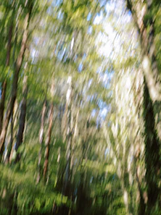

04 — What it wrote
The file was called
_DSC4471.NEF
Here is what it is called now. Every line below was written by Verso, on the frame beside it, without anyone opening the folder.
_DSC4471.NEF
Pale grass going past the window, late afternoon — Kvist, day two.

IMG_0098.CR3
White blossom smeared across green, the camera still moving.
A7R_11204.ARW
Pink blossom against deep green, shot wide open on the move.
SCAN_031.TIF
A soft horizon just after sunset, almost no detail left in it.
_DSC4482.NEF